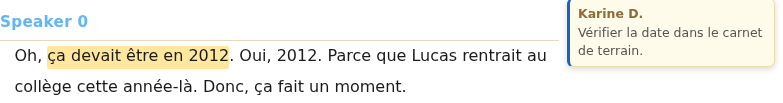

Importer et traiter
Commenter un passage
Un commentaire vous permet d’attacher une remarque à des mots précis de la transcription : vérifier une date, signaler une hésitation ou garder une question de relecture. Il ne change pas les paroles transcrites.
Une note rassemble plutôt un résumé ou une réflexion à l’échelle de l’entretien. Vous pouvez ensuite lier un passage de note à un commentaire pour revenir rapidement à son contexte.
Les étapes ci-dessous sont vérifiées dans un corpus local. Pour essayer, ouvrez votre copie de Entretiens déjà importés, puis 1Coordinatrice.
Ajouter un commentaire à une sélection
- Ouvrez l’entretien avec le crayon de sa carte.
- Sélectionnez les mots concernés dans la transcription.
- Faites un clic droit dans la sélection, puis choisissez 💬 Commenter la sélection.
- Renseignez l’Auteur, si vous souhaitez signer la remarque, puis saisissez le commentaire.
- Cliquez sur Valider, puis attendez l’état à jour en haut de l’entretien.
Dans l’exemple, sélectionnez ça devait être en 2012 et écrivez : « Vérifier la date dans le carnet de terrain. » Le passage reçoit une teinte jaune pâle et le commentaire apparaît dans la marge.

Le champ Auteur est facultatif. SonalPi mémorise le dernier signataire validé et le propose lors du commentaire suivant. Vous pouvez le changer avant de valider. Annuler ou la touche Échap ferme la fenêtre sans créer le commentaire ; Ctrl+Entrée le valide.
Retrouver le passage commenté
La carte affiche l’auteur et le début du commentaire. Survolez le passage pour repérer sa carte. Un commentaire long est abrégé dans la marge : cliquez sur la carte pour lire son texte complet.
Dans une fenêtre de moins de 1 000 pixels de large, les cartes sont masquées pour laisser davantage de place à la transcription. La teinte du passage reste visible. Faites un clic droit sur ce passage, puis choisissez ✏️ Commentaire — auteur… pour le rouvrir.
Plusieurs commentaires peuvent concerner le même passage ou se chevaucher. Le clic droit présente alors une entrée pour chacun d’eux.
Modifier l’auteur ou le texte
- Cliquez sur la carte du commentaire. Si la marge est masquée, faites un clic droit sur le passage et choisissez le commentaire voulu.
- Corrigez l’auteur ou le texte.
- Cliquez sur Valider et attendez l’état à jour.
Annuler abandonne les changements de la fenêtre et conserve la version déjà enregistrée. Corriger un commentaire ne modifie ni la transcription, ni ses codages, ni ses repères temporels.
Dans un entretien ouvert en lecture seule, les commentaires restent visibles, mais leur création, leur modification et leur suppression ne sont pas proposées.
Relier une note au commentaire
Dans l’onglet Notes de l’entretien, ouvrez une note ou sa vue feuille. Sélectionnez un passage de cette note, cliquez sur 🔗 Lier à un commentaire, puis choisissez le commentaire. Une référence apparaît dans la note ; cliquez dessus pour rejoindre le passage commenté dans la transcription.
Le commentaire n’est pas copié dans la note. Modifier son texte actualise la référence affichée. Si vous supprimez le commentaire, la note reste enregistrée, mais ce lien ne peut plus rejoindre le passage.
Supprimer ou rétablir un commentaire
- Ouvrez le commentaire depuis sa carte ou le clic droit sur son passage.
- Cliquez sur Supprimer.
La suppression est immédiate et ne demande pas de confirmation. Elle retire la carte, la teinte et le lien du commentaire, mais conserve les mots de la transcription, les codages et les notes.
Tant que vous n’avez pas fermé l’entretien, ouvrez l’onglet Journal et cliquez sur la flèche ↩ de Commentaire supprimé pour le rétablir. Le journal de cette session n’est pas une sauvegarde durable : vérifiez le résultat avant de quitter.
Vérifier les commentaires avant un export
Les commentaires ne figurent pas dans les exports de lecture TXT, SRT, VTT, DOCX ou PDF. Ils sont en revanche conservés dans un export .sonal complet et dans le fichier HTML, même si la page HTML ne reproduit pas leurs cartes de marge. Un transfert de corpus vers QualCoder peut également les reprendre.
La pseudonymisation de la transcription ne remplace pas automatiquement le texte ou l’auteur des commentaires. Relisez-les avant de transmettre un fichier qui les contient. Le rapport de pseudonymisation peut les signaler, mais il ne décide pas à votre place ce qui doit être retiré.
Un export est une copie destinée à la lecture ou à l’échange, pas une sauvegarde complète du corpus. Exporter ne modifie ni le commentaire ni l’entretien source.